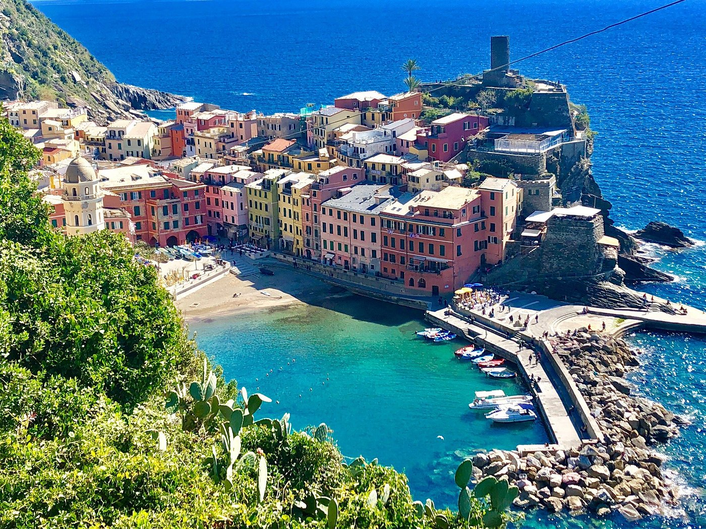
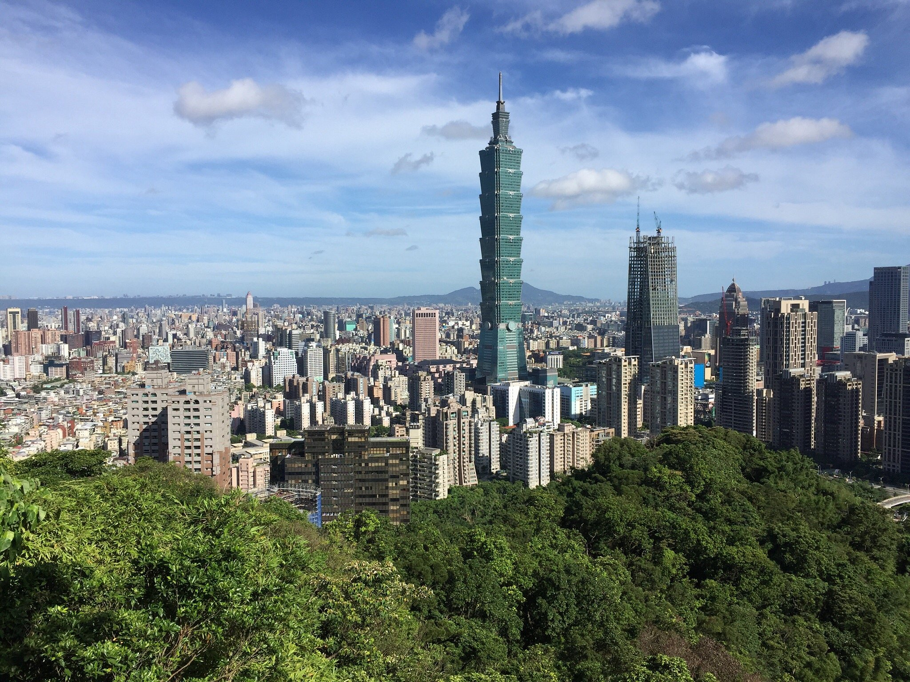
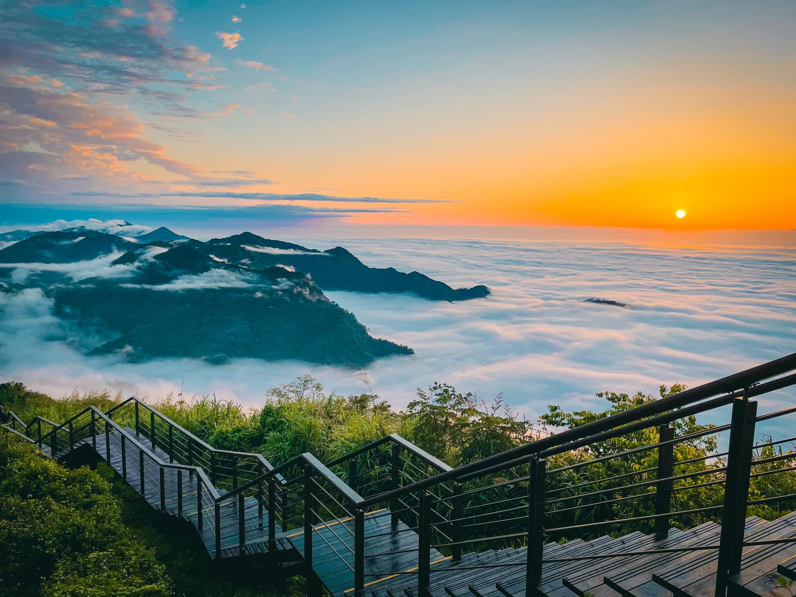

Travel Spots
1. Hawaii
2.

3.

4. hawaii.gif
5. hawaii.jpg
6. Geographical Location: North America
7. Hawaii is a group of volcanic islands located in the central Pacific Ocean and it is the most isolated island chain on earth.
8. Hawaii is known for its law of the Aloha Spirit, the land of majestic beaches, hawaiian music, and hawaiian waterfalls.
9. Photo Gallery

10. hawaii_na_pali.jpg/p>
11. A scenic picture of a rock wall and an ocean.
12. My favorite view in Hawaii

13. hawaii_saddle-road.jpg
14. A road in hawaii
15. The most beautiful drive in hawaii

16. hawaii_turtle.jpg
17. A turtle swimming in the ocean
18. This is a turtle I found while I was scuba diving.

19. hawaii_whale.jpg
20. A whale swimming in the ocean
21. This is a whale I found while I was scuba diving.
22. Lily Steinmetz
1. Italy
2.

3.

4. italy.gif
5. italy.jpg
6. Geographical Location: Europe
7. Italy is a country located in Southern Europe comprising the boot-shaped Italian peninsula and a number of islands including Sicily and Sardinia.
8. Italy is well known for its architecture, culture, art, opera, literature, film, and fashion.
9. Photo Gallery
10. italy_2.jpg
11. A scenic picture of italy with the ocean and some buildings.
12. My favorite view of Italy.

13. italy_3.jpg
14. A photo on the river of the lit up buldings in italy
15. Beautiful lights in Italy

16. italy_4.jpg
17. A far back photo of the ocean with some buildings.
18. The view from my hotel in Italy.

19. italy_5.jpg
20. Buildings on the coast of italy
21. My view from when I got off the boat.
22. Lily Steinmetz
1. Taiwan
2.
3.
4. taiwan.gif
5. taiwan_101.jpg
6. Geographical Location: East Asia
7. Taiwan is a country in East Asia located at the junction of the East and South China Seas in the northwestern Pacific Ocean.
8. Taiwan is well known for their beef noodle soup, bubble tea, bicycles, convenience stores, and nightlife.
9. Photo Gallery
10. taiwan_ali_mt.jpg
11. Mountains peeking through the clouds in front of a sunset.
12. Skyline view of Taiwan

13. taiwan_jiufen.jpeg
14. A building in taiwan decorated in red
15. Decorations in Taiwan

16. taiwan_qingshui.jpeg
17. A beautiful ocean surrounded by greenery.
18. Bright blue water in Taiwan.

19. taiwan.jpg
20. Buildings in taiwan with a dragon on the roof of one
21. The details of buildings